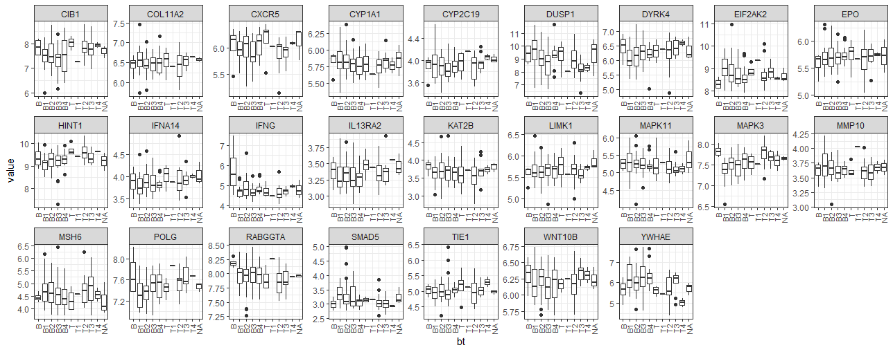
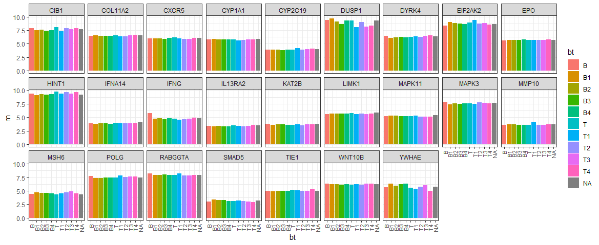
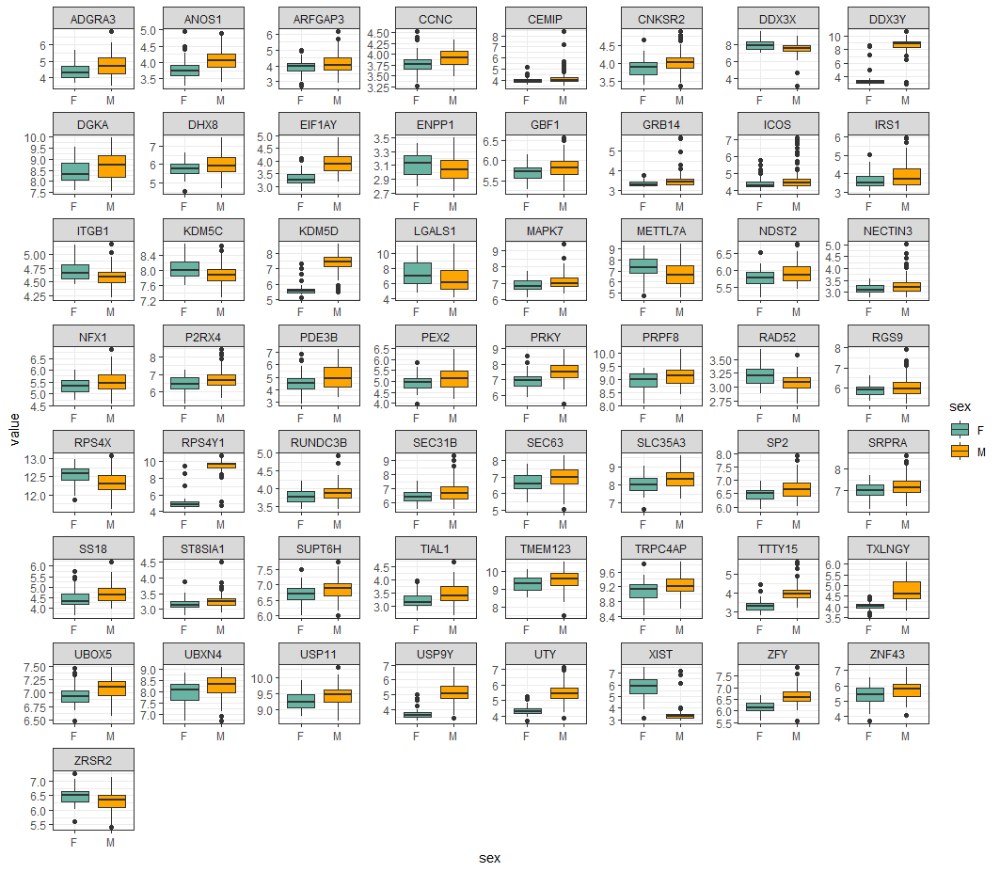
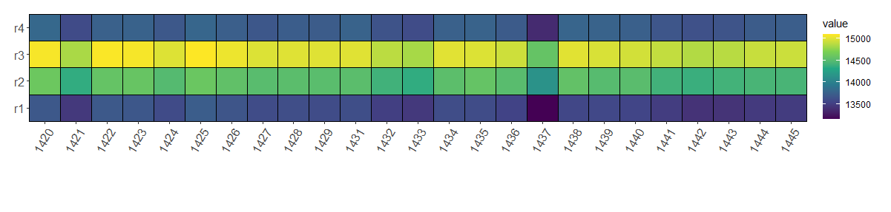
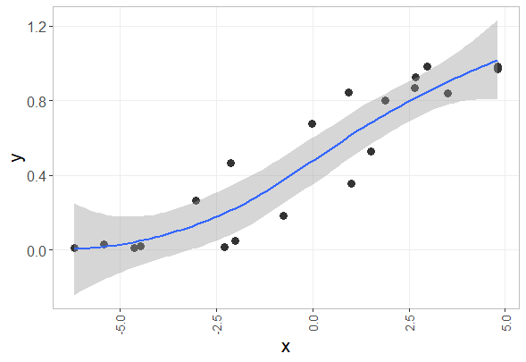

Chapter 6 Analysis example
6.1 ALL dataset
- BT 그룹별 유전자들의 발현 분포를 boxplot 이용해서 비교

library(tidyverse)
library(Biobase)
library(ALL)
library(hgu95av2.db)
data(ALL)
ex_data <- exprs(ALL)[1:30,]
ph_data <- pData(ALL)[,c("cod", "sex", "BT")]
ph_data %>% head
ph_data <- ph_data[complete.cases(ph_data),]
feature_names <- rownames(ex_data)
gene_names <- unlist(as.list(hgu95av2SYMBOL[feature_names]))
idx <- which(is.na(gene_names) | duplicated(gene_names))
ex_data <- as.data.frame(ex_data[-idx,])
rownames(ex_data) <- gene_names[-idx]
ex_data[1:3,1:3]
ex_data_mlt <- ex_data %>%
rownames_to_column(var="symbol") %>%
pivot_longer(-symbol) %>%
mutate(bt=ph_data[name,"BT"])
## === indexing example ===
m <- matrix(sample(100), 10, 10)
rownames(m) <- LETTERS[1:10]
m["A",]
m[c("A", "C"),]
m[rep(c("A", "C"), 10),]
ex_data_mlt %>%
group_by(symbol) %>%
ggplot(aes(x=bt, y=value, group=bt)) +
geom_boxplot() +
facet_wrap(~symbol, ncol=9, scales="free") +
theme_bw() +
theme(
axis.text.x = element_text(angle = 90, size=8, hjust = 1, vjust=0.5)
) - BT 그룹별 유전자 발현 평균 비교

ex_summary <- ex_data_mlt %>%
group_by(symbol, bt) %>%
summarise(m = mean(value))
ggplot(ex_summary, aes(x=bt, y=m, fill=bt)) +
geom_bar(stat="identity") +
facet_wrap(~symbol, nrow=3) +
theme_bw() +
theme(
axis.text.x = element_text(angle = 90, size=8, hjust = 1, vjust=0.5)
)- 성별별 유전자 발현 평균 검정
ex_data_mlt <- ex_data %>%
rownames_to_column(var="symbol") %>%
pivot_longer(-symbol) %>%
mutate(sex=ph_data[name,"sex"])
## example
t.test(c(1:5), c(6:10))
z <- data.frame(y=c(1:10),
x=c(rep("a", 5), rep("b", 5)))
t.test(y~x, data=z)
z
t.test(value~sex, data=ex_data_mlt)
ex_data_mlt %>%
group_by(symbol) %>%
summarise(
tstat=t.test(value~sex)$statistic,
pval=t.test(value~sex)$p.value
)
ex_data_mlt- 성별별 유전자 발현 평균 검정 (전체 데이터)

#### test all
data(ALL)
## data
ex_data <- exprs(ALL)
ph_data <- pData(ALL)[,c("cod", "sex", "BT")]
## remove missing | duplicated genes
ph_data <- ph_data[complete.cases(ph_data),]
feature_names <- rownames(ex_data)
gene_names <- unlist(as.list(hgu95av2SYMBOL[feature_names]))
idx <- which(is.na(gene_names) | duplicated(gene_names))
ex_data <- as.data.frame(ex_data[-idx,])
rownames(ex_data) <- gene_names[-idx]
dim(ex_data)
ex_data_mlt <- ex_data %>%
rownames_to_column(var="symbol") %>%
pivot_longer(-symbol) %>%
mutate(sex=ph_data[name, "sex"]) %>%
drop_na()
## check na
sum(is.na(tmp))
test_results <- ex_data_mlt %>%
group_by(symbol) %>%
summarise(
tstat=t.test(value~sex)$statistic,
pval=t.test(value~sex)$p.value
)
sig_results <- test_results %>%
filter(pval<0.01)
sel_genes <- ex_data_mlt %>%
filter(symbol %in% sig_results$symbol)
sel_genes %>%
group_by(symbol) %>%
ggplot(aes(x=sex, y=value, fill=sex)) +
geom_boxplot() +
facet_wrap(~symbol, ncol=8, scales="free")
## set color
sel_genes %>%
group_by(symbol) %>%
ggplot(aes(x=sex, y=value, fill=sex)) +
geom_boxplot() +
facet_wrap(~symbol, ncol=8, scales="free") +
theme_bw() +
scale_fill_brewer(palette="BuPu")
## set color 2
sel_genes %>%
group_by(symbol) %>%
ggplot(aes(x=sex, y=value, fill=sex)) +
geom_boxplot() +
facet_wrap(~symbol, ncol=8, scales="free") +
theme_bw() +
scale_fill_manual(values=c("#69b3a2", "orange")) - BT 그룹별 유전자 발현 anova 테스트
### testing (anova)
lm(data=ex_data_mlt, formula = value~bt)
ex_data_mlt <- ex_data %>%
rownames_to_column(var="symbol") %>%
pivot_longer(-symbol) %>%
mutate(bt=ph_data[name, "BT"]) %>%
drop_na()
## anova
fit <- anova(lm(data=ex_data_mlt, formula = value~bt))
pval <- fit$`Pr(>F)`[1]
## warning! it takes too long time
test_results <- ex_data_mlt %>%
group_by(symbol) %>%
summarise(
pval <- anova(lm(data=ex_data_mlt, formula = value~bt))$`Pr(>F)`[1]
)
sig_results <- test_results %>%
filter(pval<0.01)
sel_genes <- ex_data_mlt %>%
filter(symbol %in% sig_results$symbol)
## set color
sel_genes %>%
group_by(symbol) %>%
ggplot(aes(x=sex, y=value, fill=sex)) +
geom_boxplot() +
facet_wrap(~symbol, ncol=8, scales="free") +
theme_bw() +
scale_fill_manual(values=c("#69b3a2", "orange")) 6.2 Heatmap with clustering
https://github.com/greendaygh/KRIBBR2020/tree/master/ngs

library(tidyverse)
library(Biostrings)
refseq <- readDNAStringSet("./day4/dmpR_GESSv4.fasta.txt")
class(refseq)
pfm <- consensusMatrix(refseq)
dim(pfm)
pfm[1:10,1:5]
pfm_atgc <- t(pfm[1:4,])
load("./day4/R1_target_freq.Rdata")
ls()
target_freq %>% head
ref_freq1 <- pfm_atgc * target_freq
load("./day4/R2_target_freq.Rdata")
ref_freq2 <- pfm_atgc * target_freq
ref_freq2 %>% head
load("./day4/R3_target_freq.Rdata")
ref_freq3 <- pfm_atgc * target_freq
load("./day4/R4_target_freq.Rdata")
ref_freq4 <- pfm_atgc * target_freq
ref_freq1 %>% head(3)
ref_freq2 %>% head(3)
ref_freq3 %>% head(3)
ref_freq4 %>% head(3)
mydata <- data.frame(
r1=rowSums(ref_freq1),
r2=rowSums(ref_freq2),
r3=rowSums(ref_freq3),
r4=rowSums(ref_freq4)
)
mydata %>%
rownames_to_column(var="pos") %>%
arrange(pos) %>%
head
mydata2 <- mydata %>%
mutate(pos=nrow(.):1) %>%
arrange(pos) %>%
pivot_longer(-pos)
ggplot(mydata2, aes(x=pos, y=name, fill=value)) +
geom_tile()
## subset
mydata2 %>%
filter(pos <= 100) %>%
ggplot(aes(x=pos, y=name, fill=value)) +
geom_tile()
## scale
mydata_scaled <- mydata %>%
t %>%
scale %>%
t %>%
data.frame
## clutering
library(NbClust)
?NbClust
nc <- NbClust(mydata_scaled,
min.nc=3,
max.nc=10,
method="kmeans")
cl <- kmeans(mydata_scaled, centers=4, iter.max=10000)
table(cl$cluster)
mydata_long <- mydata %>%
mutate(pos=factor(nrow(.):1), cl=cl$cluster) %>%
#mutate(posf=factor(pos)) %>%
pivot_longer(-c(pos, cl)) %>%
arrange(cl)
mydata_long %>%
ggplot(aes(x=pos, y=name, fill=value)) +
scale_fill_viridis_c() +
geom_tile()
tiff("Figure.tiff",
width = 15,
height = 5.5,
units = 'in',
res = 300,
compression = 'lzw')
mydata_long %>%
head(100) %>%
ggplot(aes(x=pos, y=name, fill=value)) +
scale_fill_viridis_c() +
geom_tile(color="black", size=0.5) +
scale_x_discrete() +
coord_cartesian(ylim = c(0.5, 4.5), expand = FALSE, clip = "off") +
theme(panel.spacing = unit(0.5, "lines"),
plot.margin = unit(c(1,1,4,1), "lines"),
axis.title.x = element_blank(),
axis.title.y = element_blank(),
axis.text.x = element_text(size=12, angle = 60, hjust = 1, vjust=1),
axis.text.y = element_text(size=12)
)
dev.off()6.3 Smooth line

## data generation
tmpx <- seq(-5, 5, by=0.01)
tmpx2 <- jitter(tmpx, 1000)
tmpy <- 1/(1+exp(-tmpx))
idx <- sample(1:length(tmpx), 20)
x <- tmpx2[idx]
y <- tmpy[idx]
z <- data.frame(x, y)
ggplot(z, aes(x=x, y=y)) +
geom_point() +
geom_smooth()
ggplot(z, aes(x=x, y=y)) +
geom_point(size=3, shape=16, color="#333333") +
geom_smooth(method="loess", level=0.95, span=1) +
theme(panel.grid.minor = element_blank(),
axis.text.y = element_text(size=12),
axis.text.x = element_text(angle = 90, size=10, hjust = 1, vjust=0.5),
axis.title.x = element_text(size=16),
axis.title.y = element_text(size=16),
strip.text = element_text(size=12),
panel.grid.major = element_line(colour = "#eeeeee"),
panel.background = element_blank(),
strip.background = element_rect(colour = "gray", fill = "white"),
#legend.position="none",
panel.border = element_rect(color="grey", fill = NA))
이 저작물은 크리에이티브 커먼즈 저작자표시-비영리-변경금지 4.0 국제 라이선스에 따라 이용할 수 있습니다.